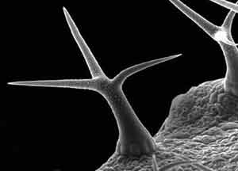
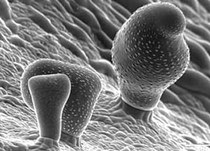
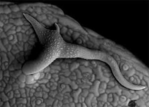

Model cell: Trichome
The major research program in the lab is aimed at generating an Early Intracellular Response Profile for higher plants.
Unicellular epidermal trichomes of Arabiopsis are 300-500 µm tall and distributed in a non-random pattern on the leaf surface. Arabidopsis leaves display both unbranched and 3-5 branched trichomes but stem trichomes are usually unbranched. Trichomes initiate as epidermal bumps, and grow into a cylinderical form that may develop distinct branch sites. Branch initiation is followed by rapid cell expansion to give the stellate form. Mature Arabidopsis trichomes develop a papillate surface.
Developing trichomes of Arabidopsis respond rapidly to alterations in microtubule dynamics. Both stabilization (using drugs like taxol), or destabilization (using chemicals like oryzalin) of microtubules results in isotropic cell expansion to produce swollen trichomes. Trichome branch initiation clearly involves microtubules as transient stabilization of microtubules allows branch initiation in unbranched trichomes.
Some of the genes involved in trichome cell morphogenesis have been identified.
Trichome morphology is greatly altered by changes in the actin cytoskeleton. Actin-inhibitor treatments affect trichome cell expansion and produce randomly distorted trichomes. 
Our lab works on the molecular and cell biological aspects of actin-microtubule interactions during cell shape development using Arabidopsis trichomes as a model cell type. Recently several genes involved in actin-dependant trichome cell morphogenesis have been identified
Model Cell: Root Hair
The major research program in the lab is aimed at generating an Early Intracellular Response Profile for higher plants.
Root-hair cells in Arabidopsis are unicellular, and develop in alternate root epidermal cell files. A root hair initiates as a tiny bulge near the apex of a trichoblast.Subsequently a growth domain becomes specified within the bulge and the cell embarks on a phase of 'tip-growth' from this region. Tip growth has been shown to be an actin-dependent process and is characterized by a vesicle rich region at the cell apex.
An interference with the actin cytoskeleton invariably results in short, non-extending, thick root-hairs.
However, the directionality as well as maintainence of tip-directed growth appears to be determined by the microtubule cytoskeleton. Aberrant microtubule behaviour leads to loss of polar root hair growth.
Resultant root-hairs are randomly branched and multiple-tipped. (see image)
Our lab uses the tip-growth model, root hair cells to investigate the response hierarchy and interactions between the actin and microtubule cytoskeletal systems.
Model Cell: Hypocotyl cell
The major research program in the lab is aimed at generating an Early Intracellular Response Profile for higher plants.
The cylinderical cells of the hypocotyl represent a set of cells whose developmental behaviour is essential for the survival of a germling and is therefore well conserved between different angiospermic species.
Hypocotyl cells do not elongate properly upon an interference with the actin cytoskeleton. On the contrary, they expand rapidly an exhibit isotropic growth when the microtubule cytoskeleton is compromised.
The distinct actin / microtubule cytoskeleton-related response of hypocotyl cells, their easy accessibility for experimental maniplation as well as their capability to elongate rapidly towards a light source make them a very interesting cell type.
Our lab is developing hypocotyl cells as a model cell type for studying cytoskeletal interactions during higher plant morphogenesis.
- Mathur. Cell shape development in plants. TRENDS IN PLANT SCIENCE. 9 (12): 583-590. December, 2004.
- Mathur. The ARP2/3 complex: giving plant cells a leading edge. BIOESSAYS. 27(4). 377-387. April 2005.